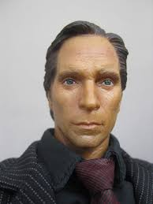

Koala
Cool koala
Koza
Kozy są zwierzętami ogólnoużytkowymi. Charakteryzuje je harmonijna budowa ciała i prawidłowo wykształcone wymię. Kozy mają kształtną głowę, długą szyję, są rogate, posiadają krótkie, cienkie rogi wzniesione ku górze i tyłowi. Posiadają bródkę i często „dzwonki” na szyi.